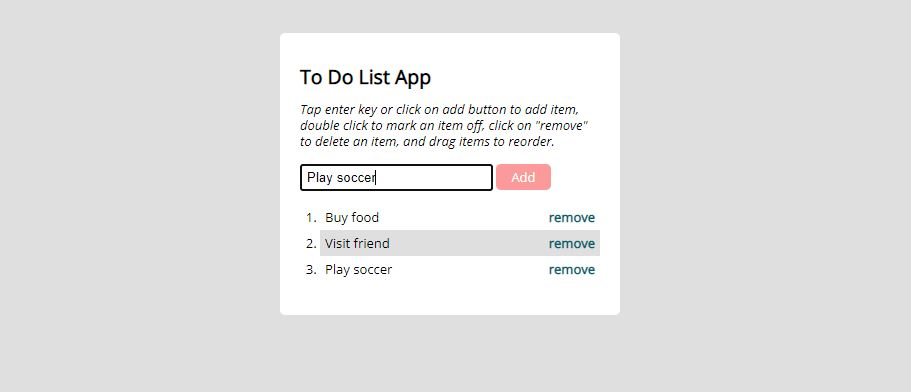

I possess proven analytic and creative skills for developing responsive and functional websites. I enjoy building web projects with full user accessibility, usability and inclusive functions. Seeking for an opportunity to live my joy professionally, while working with a great team in the future.
meet
Udoka!
Educationist turned Web Developer.
A user-Centered Software Developer.
About Me
I'm Udoka Ilodigwe, a Software Developer based in Helsinki, Finland. I have a background in
education, both in research and instructional technology.
A former project assistant on an European Union research titled
Inter-generational Learning Effect in the EU. I have also trained kids and adults both abled and
non-abled
ones on how to use assisstive technologies.
I have garnered lots of experience in strategically observing and documenting the strengths and
weaknesses
of each trainee. I carefully analyze each documentation to find out their individual needs. With
these needs
in mind, i creatively craft individualistic instructional techniques to accommodate the learning
styles
and
needs of each trainee.
I have always focused on delivering optimized instructions that target specific need, while
ensuring
full coverage of my target audience.
Communicating idea, knowledge as well as collaboration is also
part of my
strongest points.
I am currently seeking for an opportunity to implement similar principles while developing products
for
users. I am always motivated to build products with full user
accessibility and usability
functions.
Hence, i am poised to join an excellent and inspiring team to ignite that spark and help me fufill
my
professional dream.
These are some things I enjoy doing:
- Working as a Web-Developer
- Researching and learning new knowledge
- Improving my coding skills
- Socializing with new people and working with them
- Working out in the gym
- Playing football and videogames
To learn more about me, please download my resume
My Projects
JAVASCRIPT
TYPESCRIPT
REACT
HTML/CSS
ANGULAR
NODE/EXPRESS
MONGODB
REACT NATIVE
MATERIAL UI
NETLIFY/HEROKU
EXPO
AWS
Trip Planning APP
A comprehensive
PokéDex APP
This is a simple application written with

meet App
A
udo_Flix-API
udo_flix-API is a server-side application built with the combination of
udo_Flix-React-Client
A frontend Single Page
udo_Flix-Angular-Client
A frontend

chatMeUp
A
React Weather App
This is a simple weather checking application for users to get the current weather situation
of any part of the world. This application was written with a combinantion of

To_Do_List_App
Is a simple app written in
Contact
I always seek to connect and collaborate with fellow creative people, if you find me fit and interesting with my skills please reach out to me via phone, LinkedIn or through the form channel below and let's talk.
Udoka Ilodigwe
Joensuu, Finland
ilodigweudoka@gmail.com


Usually replies within 24hrs Helsinki time.